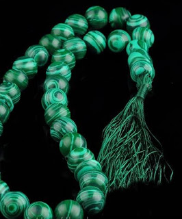

9 Нить Ариадны
Все, что я здесь пишу, предназначается для того, чтобы в последствии при необходимости вспомнить все шаги при работе с осознанными сновидениями и другими практиками, если я их забуду. Мои записи являются зацепками, которые однажды мне могут помочь вспомнить происходящее, если я перемещусь в другое состояние осознания.
Разная память сохраняется в разных состояниях осознания. Этому есть множество доказательств у самых разных людей. Например, пьяный человек может абсолютно забыть какое-то событие, которое произошло, когда он был пьян, но стоит ему снова выпить, он может вспомнить это событие.
События из снов, мысли и выводы порой гораздо проще вспоминаются в других снах, нежели в состоянии бодрствования.
Пока я еще все помню, я запишу.
Зачем нужны осознанные сновидения
1) Это первая ступень для управления своим энергетическим телом, для передачи команд "напрямую". В обычной жизни слова уже потеряли свое энергетическое наполнение, поэтому они не несут силы. В сновидении же ситуация иная: слово имеет больший вес, поскольку является потоком энергии. В результате, такая команда, данная в О.С, будет иметь больший вес. Чтобы команды преобретали необходимую силу, необходима тренировка воли и внимания сновидения.
Я до сих пор не могу себе представить все возможности подобных команд. Но как я начала понимать опытным путем, подобная работа с энергетическим телом может раскрыть спящие возможности человека, может позволить человеку излечиться, правильно управляя энергетическими потоками, поскольку прежде всего мир представляет из себя потоки энергии, которые мозг человека воспринимает как физические объекты.
2) Непроизвольное скольжение в разные состояния восприятия и энергетические конфигурации.
В О.С'ах это происходит гораздо проще, нежели в бодрствовании.
В разных состояниях восприятия человек воспринимает разные аспекты этого мира, которые становятся ему доступны. Состояния осознания можно сравнить с разными светофильтрами, которые пропускают лишь определенные волны. Целостное восприятие обеспечивается путем суммирования полученной информации. Мир как бы является многогранником, и в каждом состоянии восприятия мы видим лишь одну его грань.
Это означает, что мы имеем возможность вспомнить/осознать гораздо больше, чем помним в состоянии бодрствования. Я постоянно чувствую, что что-то нужно вспомнить. Чувствую необходимость выполнить какую-то задачу, суть которой пока вспомнить не могу. Вероятно потому, что что бы вспомнить, надо соскользнуть на "другой энергетический уровень", в другую энергетическую конфигурацию.
Состояние бодрствования все больше мне напоминает "ловушку", энергетическую яму, куда нас поймали с целью "выдаивания" из нас энергии, словно получение молока из дойных коров. Наблюдаю за людьми и вижу, что они расходуют огромное количество энергии по пустякам, растрачивая ее на те моменты, которые того не стоят. На преходящее. А раз энергия уходит.. кем-то/чем-то, значит, она поглощается?
Может, человек рано поставил себя во главе мира?
Может, он не замечает, что он не единственный и главный хищник, а всего лишь звено в цепи питания? И над ним есть другие хищники, которые им питаются, правда, не его физическим телом, а его энергией?
Не те ли это существа - "гости", которых я иногда встречала в сновидениях и которые сильно отличаются от обычных фейков. Кстати, далеко не всегда они встречались в человеческом обличии - они даже могли быть странно ведущими себя предметами.
3) Встреча с "Гостями".
Я называю "Гостями" тех сущностей, которых иногда встречаю в осознанных снах. Я ощущаю их энергию и они могут удерживать внимание моего сна. Однажды такой "Гость" меня смог "втянуть" в тот же сон после моего пробуждения. Слово "Гость" я позаимствовала из "Соляриса", поскольку что-то в них напоминает тех самых гостей, описанных в книге. Их природа непонятна, но периодически они могут появляться в человеческом обличии, в образе животных или даже странных предметов. Польза от гостей заключается в том, что, будучи существами другогом мира, они несут с собой свое знание, которое способны передать нам